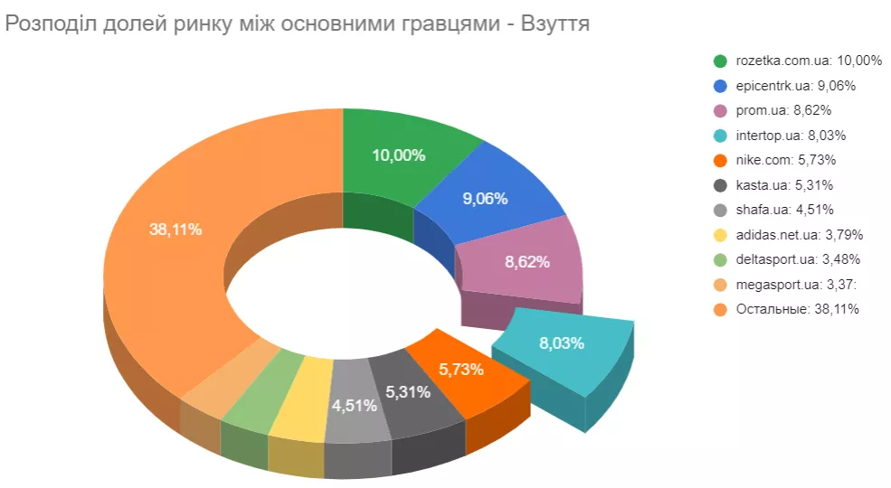

Хто клієнт
З компанією INTERTOP агентство Netpeak співпрацює вже понад п’ять років. Щороку ми підбиваємо підсумки попередньої річної стратегії і, виходячи з результатів та змін на ринку, створюємо нову. Крім того, щокварталу стратегія актуалізується і за потреби корегується, щоб постійно тримати руку на пульсі та вчасно реагувати на зміни ринку. 2021 був цікавий ще й тим, що крім пошуку точок зростання в традиційних нішах, клієнт націлився на нову для себе і висококонкурентну — «Одяг».
INTERTOP — найбільший маркетплейс у ніші fashion із широкою мережею офлайн-магазинів (понад 130 у 27 містах). Є офіційним ритейлером в Україні таких брендів як Armani Exchange, Emporio Armani, Clarks, Ecco, Geox, Marc O’Polo, Napapijri, Skechers, Timberland та KIKO Milano. Компанія працює на ринку вже понад 25 років. В асортименті присутній чоловічий, жіночий і дитячий одяг, взуття, аксесуари та б’юті товари багатьох брендів.
Цілі просування
Головною метою просування в рамках чергової щорічної стратегії було зростання за основними метриками рік до року:
- покращення видимості INTERTOP за цільовими запитами;
- збільшення цільового органічного трафіку;
- підвищення кількості продажів та доходу з органіки.
Пріоритетні категорії для просування — взуття та одяг.
У ніші взуття INTERTOP вже давно і займає суттєву частку ринку, потрібно було лише покращити результати.
Читайте докладніше про особливості SEO-просування сайтів медичної тематики.
Крім того, Alveda — новачок на ринку нетрадиційних медичних онлайн-послуг. Є кілька конкурентів, включаючи як великі платформи, так і конкурентів, які мають ще й офлайн-представництва.
Що стосується одягу, INTERTOP став новим гравцем ніші, а сама вона була поділена між великими агрегаторами. На початку 2021 року клієнт займав незначні 0,62% ринку та був на 26 місці серед конкурентів.
Дії команди
У рамках щорічної стратегії ми розписали план робіт, поділений на кілька напрямів.
Технічна оптимізація. Впровадження deep links
Нагадаю, з проєктом ми працювали вже не перший рік, тож проводити стандартний технічний аудит не було потреби. Але ми зіткнулися з викликом, який міг як покращити подальше просування сайту, так і поховати всі результати при неправильній реалізації. Мова про deep links.
Робота із контентом. Оптимізація сторінок категорій з урахуванням популярних фільтрів
Щодо оптимізації контенту раніше ми працювали з категорійними сторінками та частиною фільтрів. Але саме перед презентацією стратегії на 2021 рік на сайті впровадили новий функціонал, що дозволяє додавати ручні теги та метатеги для всіх сторінок фільтрів. Це дало нам нові можливості.
Результати просування
Ми змогли виконати прогноз щодо органічного трафіку, який прорахували на початку року:
Частка ринку, яку займає сайт за всіма пріоритетними запитами, зросла на 439%.Спочатку в рамках стратегії ми виділили кластер пріоритетних ключових запитів, за якими регулярно моніторили зміну частки ринку.